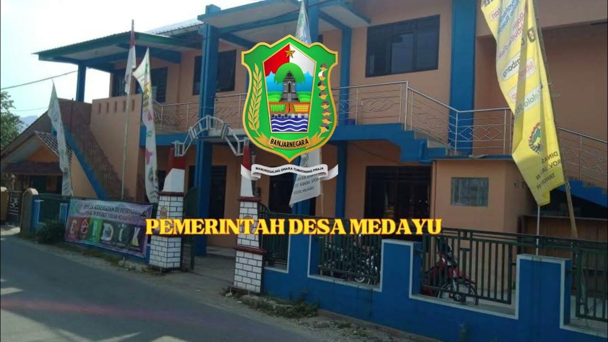

Profil
Tentang
MedayuDesa Medayu bertransformasi dinamis menjadi pusat pemukiman desa yang mandiri, rukun, serta maju secara sosiokultural di Kecamatan Wanadadi.

Visi & Misi Desa
VISI:
"Terwujudnya Desa yang Maju, Mandiri, Sejahtera, dan Berbudaya Berlandaskan Gotong Royong."
MISI:
1. Meningkatkan kualitas pelayanan publik yang transparan dan akuntabel.
2. Mendorong pembangunan infrastruktur desa yang merata.
3. Meningkatkan perekonomian warga melalui pemberdayaan UMKM dan pertanian.
"Terwujudnya Desa yang Maju, Mandiri, Sejahtera, dan Berbudaya Berlandaskan Gotong Royong."
MISI:
1. Meningkatkan kualitas pelayanan publik yang transparan dan akuntabel.
2. Mendorong pembangunan infrastruktur desa yang merata.
3. Meningkatkan perekonomian warga melalui pemberdayaan UMKM dan pertanian.
Penduduk
0
jiwa
KK / Ruh
0
OLAKT
UMKM
0
pilar
Dusun
pilar
PEMERINTAH DESA
Aparatur Perangkat Desa MedayuGeser kanan/kiri untuk melihat nama lain. Klik kartu untuk melihat detail profil.

ANUGRAH ELAN S.
Kepala Desa